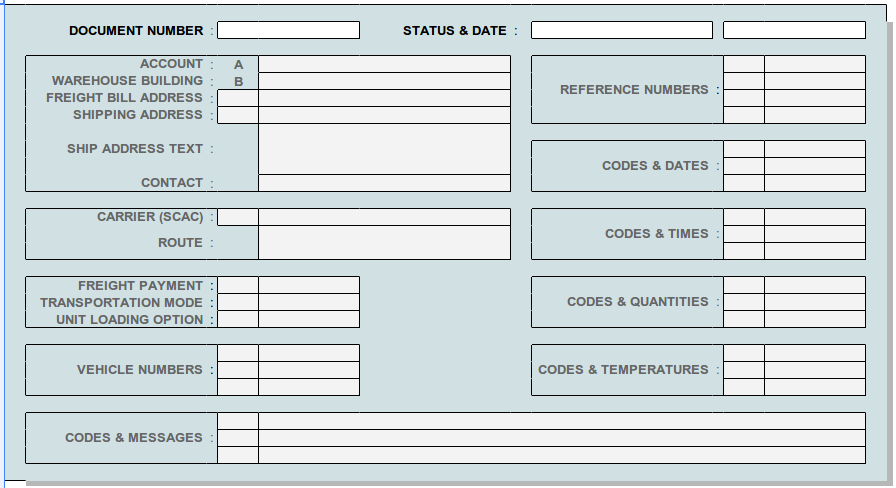
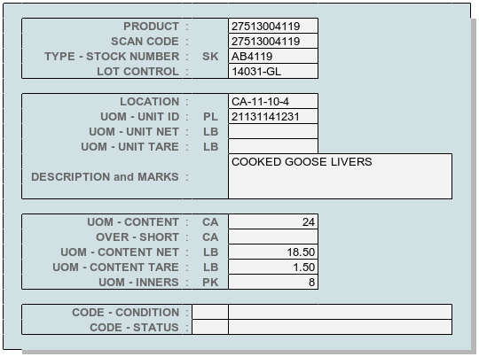

Locator Documents¶
WARES documents of all types have a common structure and are maintained in a master documents table. Source documents can be selected and reviewed by clicking the document number link on a locator item, or by using the locator Documents view page.
Note
- The term Document refers to heading information for a group of inventory transaction lines applied together.
- Each document has a unique type, listed at Document Type Codes.
Documents Filter¶
Document filter selections include facility, account, document type, status, date or date range, reference, shipping address id (and product, and lot). The Documents filter page is shown following.
Tip
Product and Lot Control entries are part of transaction lines, not documents. At least initially, these entries are not included in the documents filter.
Document View¶
Within the locator, document references link to source documents which are viewed as forms to be printed or downloaded. Document views in the locator are read-only. A generic view of document heading information is shown following.
Transaction Lines¶
Each document includes one or more lines of inventory transactions. From the list of lines, individual line detail may be displayed as shown following.
